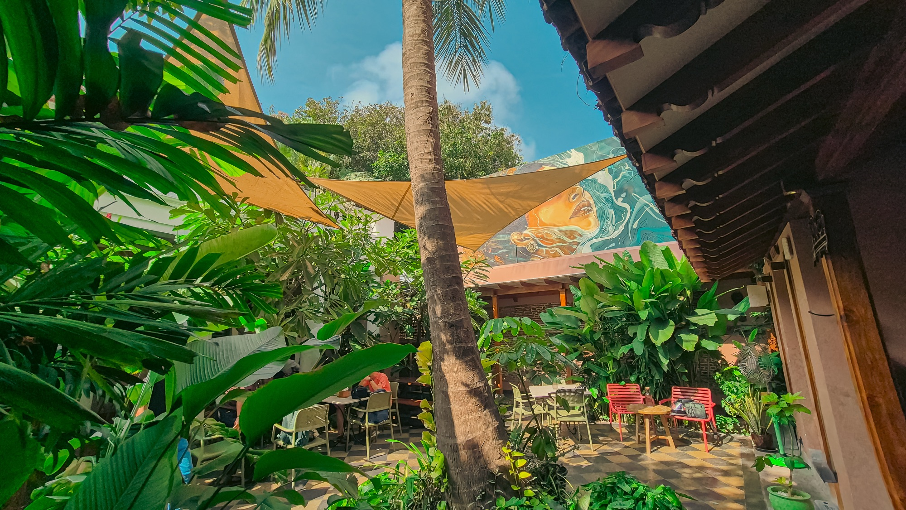
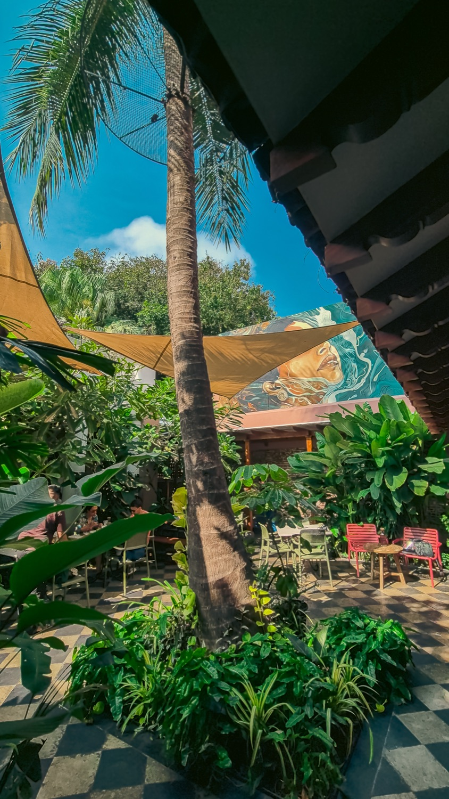
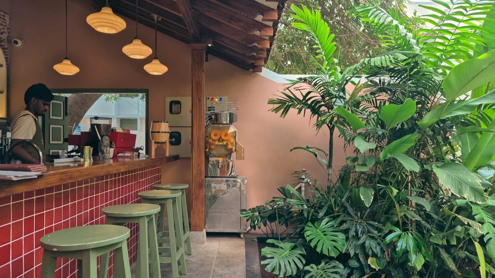
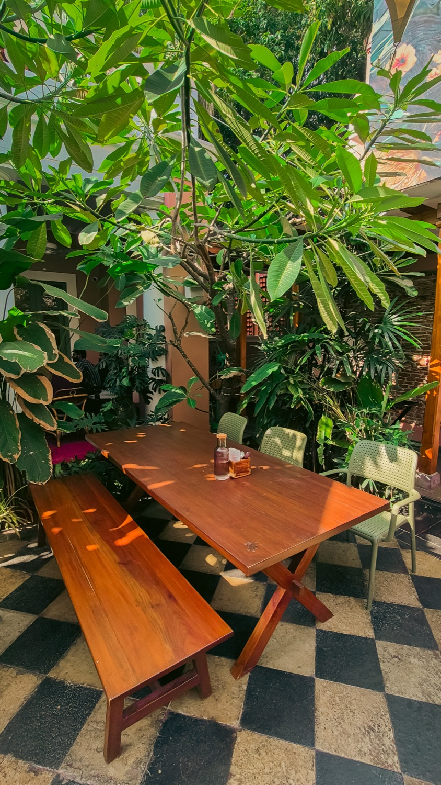
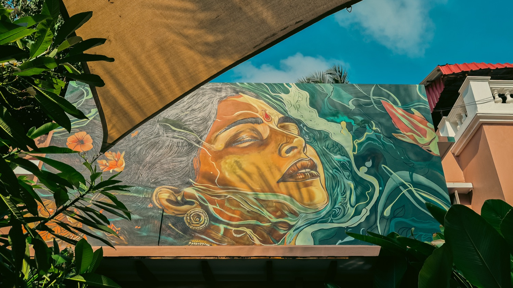
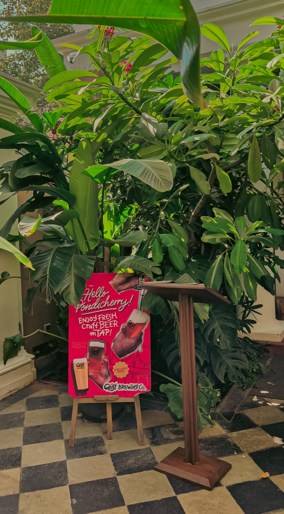

Cherry Pond
Location
Puducherry, India
Type
Hospitality courtyard
Scope
Landscape & Interiors

A green room in the heart of Pondicherry.
Cherry Pond turns a tight urban plot into a cool, planted courtyard for a café and bar. Dense tropical planting wraps a checkerboard floor and warm timber furniture, building privacy and shade while softening every hard edge. Stretched shade sails and a hand-painted mural give the space its character, and the whole room is tuned to carry easily from a morning coffee into the evening.
The planting was chosen to do real work, not just to decorate. Layered heights create enclosure and a gentle microclimate, a clean bar line keeps service flowing, and a flexible mix of seating supports both quick stops and long, slow conversations. Stone and warm wood anchor the material palette, with lighting layered for a soft day-to-night shift.




